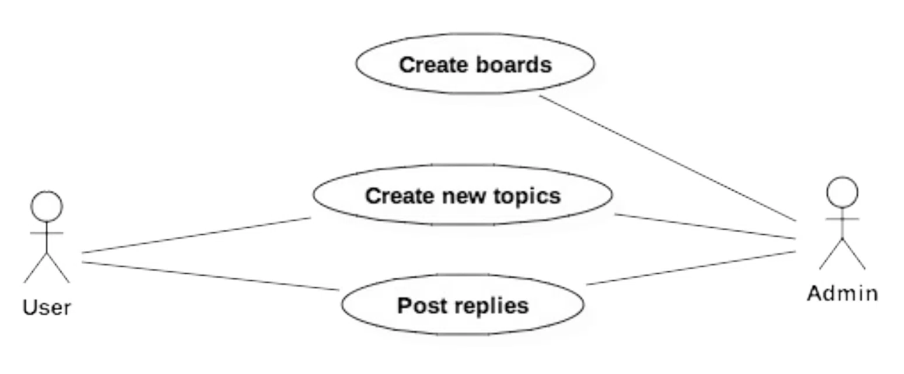
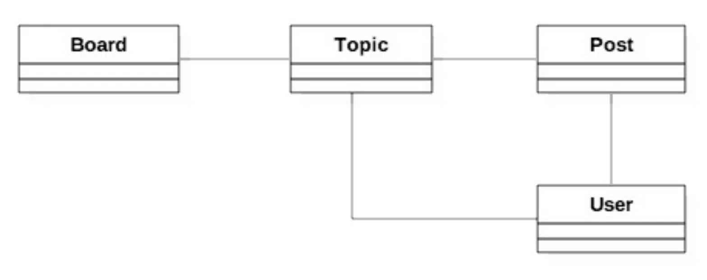
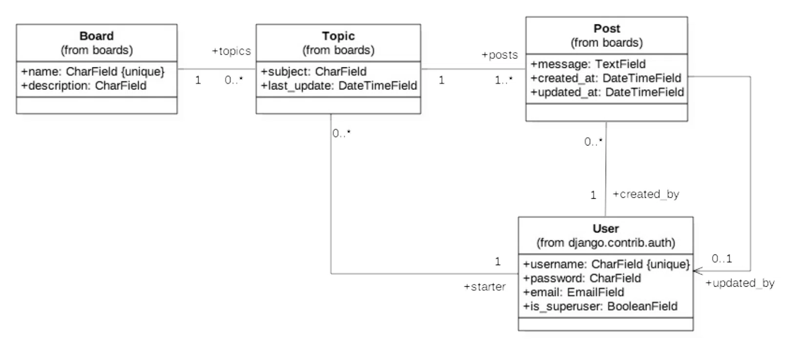
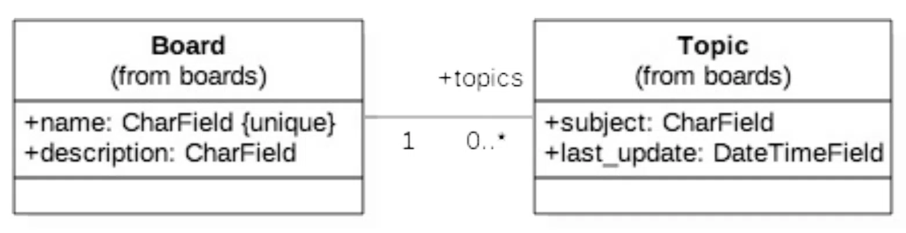
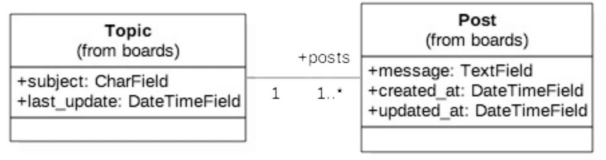
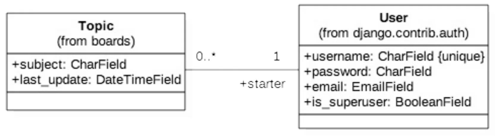
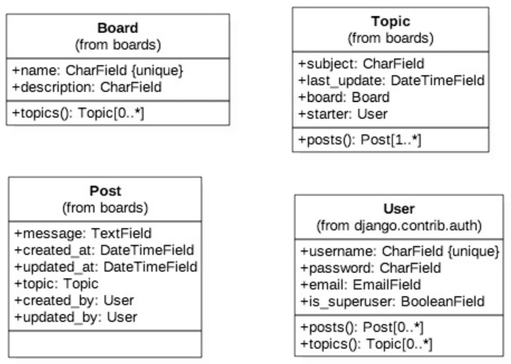

论坛项目
在进入模型，视图等其它有趣的部分之前，先让我们花点时间，简要地讨论我们将要开发的这个项目。如果你已经有了Web 开发的经验并且觉得它太繁琐了，那么你可以浏览一下图片以了解我们将要构建的内容，然后直接跳转到本教程的模型部分。
用列图
我们的项目是一个论坛系统，整个项目的构思是维护几个论坛版块（boards），每个版块像一个分类一样。在指定的版块里面，用户可以通过创建新主题（Topic）开始讨论，其他用户可以参与讨论回复。我们需要找到一种方法来区分普通用户和管理员用户，因为只有管理员可以创建版块。下图概述了主要的用例和每种类型的用户角色∶

从用例图中，我们可以开始思考项目所需的实体类有哪些。这些实体就是我们要创建的模型，它与我们的Django应用程序处理的数据非常密切。
类图
从用例图中，我们可以开始思考项目所需的实体类有哪些。这些实体就是我们要创建的模型，它与我们的Django应用程序处理的数据非常密切。
为了能够实现上面描述的用例，我们需要至少实现下面几个模型∶ Board， Topic，Post和User。

Board∶ 版块Topic∶主题Post∶帖子（译注∶ 其实就是主题的回复或评论）
类与类之间的实线告诉我们，在一个主题（Topic）中，我们需要有一个字段（译注∶其实就是通过外键来关联）来确定它属于哪个版块（Board）。同样，帖子（Post）也需要一个字段来表示它属于哪个主题，这样我们就可以列出在特定主题内创建的帖子。最后，我们需要一个字段来表示主题是谁发起的，帖子是谁发的。用户和版块之间也有联系，谁创建的版块。但是这些信息与应用程序无关。
现在我们的类图有基本的表现形式，我们还要考虑这些模型将承载哪些信息。这很容易让事情变得复杂，所以试着先把重要的内容列出来，这些内容是我们启动项目需要的信息。后面我们再使用 Django 的迁移（Migrations）功能来改进模型，您将在下一节中详细了解这些内容。但就目前而言，这是模型最基本的内容∶

这个类图强调的是模型之间的关系，这些线条和箭头最终会在稍后转换为字段。
对于 Board 模型，我们将从两个字段开始∶ name 和 description。name 字段必须是唯一的，为了避免有重复的名称。 description 用于说明这个版块是做什么用的。
Topic 模型包括四个字段∶subject 表示主题内容，last update 用来定义话题的排序，starter 用来识别谁发起的话题，board 用于指定它属于哪个版块。
Post 模型有一个 message 字段，用于存储回复的内容，created at 在排序时候用 （最先发表的帖子排最前面），updated at 告诉用户是否更新了内容，同时，还需要有对应的 User 模型的引用，Post 由谁创建的和谁更新的。
最后是 User 模型。在类图中，我只提到了字段 username，password， email， is superuser 标志，因为这几乎是我们现在要使用的所有东西。
需要注意的是，我们不需要创建 User 模型，因为Django已经在contrib包中内置了User模型，我们将直接拿来用。
关于类图之间的对应关系（数字 1，0.* 等等），这里教你如何阅读∶
一个 topic 必须与一个（1）Board（这意味着它不能为空）相关联，但是 Board 下面可能与许多个或者0个 topic 关联 （0.*）。这意味着 Board 下面可能没有主题。（译注∶ 一对多关系）

一个 Topic 至少有一个 Post（发起话题时，同时会发布一个帖子），并且它也可能有许多 Post（1.*）。一个Post必须与一个并且只有一个Topic（1）相关联。

一个 Topic必须有一个且只有一个User相关联，topic的发起者是（1）。而一个用户可能有很多或者没有 topic （0.*）。

Post 必须有一个并且只有一个与之关联的用户，用户可以有许多或没有 Post（0.*）。Post和User之间的第二个关联是直接关联（参见该行最后的箭头），就是 Post 可以被用户修改（updated_by），updated_by有可能是空（Post 没有被修改）。
画这个类图的另一种方法是强调字段而不是模型之间的关系∶

上面的表示方式与前面的表示方式是对等的，不过这种方式更接近我们将要使用 Django Models API 设计的内容。在这种表示方式中，我们可以更清楚地看到，在 Post 模型中，关联了 Topic，created_by（创建者）和 updated by（更新者）字段。另一个值得注意的事情是，在 Topic 模型中，有一个名为 posts （） 的操作（一个类方法）。我们将通过反向关系来实现这一目标，Django 将自动在数据库中执行查询以返回特定主题的所有帖子列表。